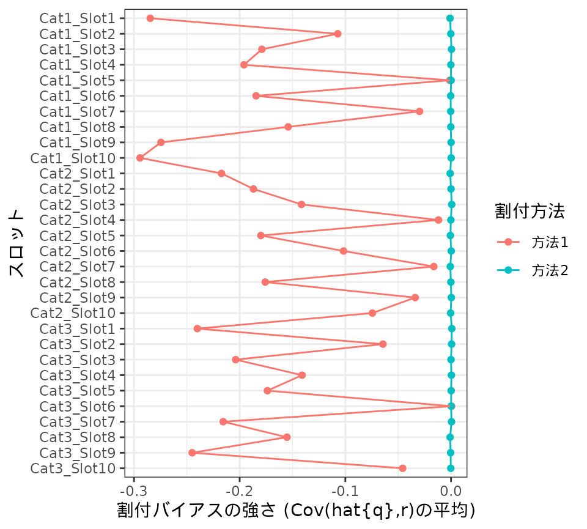

How to estimate bias
Shigeru ONO
2024-03-25
vignette_bias.Rmdここでは、rSurveyAssignパッケージを使った割付バイアスの評価について
説明します。
rSurveyAssignパッケージの背後にある考え方については、 “rSurveyAssign: tools for simulation of assignment
in web surveys”を参照して下さい。
この解説では、1-3章で割付バイアスの性質と推定・評価の方法について述べ、4-6章で具体的な手順を紹介します。このパッケージの使い方に関心がある方は、1-3章をスキップし4章からご覧いただいてもかまいません。
1. 割付バイアスの定義と性質
1.1 割付バイアスの定義
割付バイアスとは、ひとことでいえば、割付に起因するバイアスのことです。以下では議論を進めやすくするために、 割付バイアスについてもっと明確に定義しておきましょう。
あるカテゴリないしスロットAについて考えます。ある調査を行ったとき、調査対象者(調査に参加した人)のなかにAに割付可能であった対象者が\(N\)人いたとします。仮に、その人々すべてからAについての設問への回答を得たとしましょう。 そのとき対象者\(i(=1,\ldots, N)\)から得られる関心ある値を\(x_i\)とし、その平均を\[\bar{x}_P = \frac{1}{N} \sum_{i=1}^N x_i\] とします。添字\(P\)は割付可能な調査対象者を表しています。
以下では、私たちの目的は\(\bar{x}_P\)を推測することだと考えます。通常の調査では、推測したいのは\(\bar{x}_P\)ではなく、その背後にある対象母集団における回答の平均や、回答誤差をも取り除いた真の態度・意見の平均だと考えるのが普通です。しかし、ここではある調査のなかでの割付バイアスについて議論しているので、推測の対象は\(\bar{x}_P\)だと考えることにします。
さて、私たちは調査のコストや回答負荷を低減するため、Aに割付可能であった\(N\)人の対象者すべてからAについての回答を得るのではなく、そのなかの\(n\)人をAに割りつけ、この人たちのみからAについての回答を得たとします。対象者\(i\)がAに割り付けられたとき1, 割り付けられなかったとき0になる変数を\(I_i\)とします。
Aに割り付けられた\(n\)人の対象者から得られる\(x_i\)の平均は、以下のように表現できます。添字\(S\)は割り付けられた調査対象者を表しています。 \[ \bar{x}_S = \frac{1}{n} \sum_{i=1}^N I_i x_i \]
以下では割付バイアスを、割り付けられた対象者における平均の期待値と、割付可能なすべての対象者における平均とのずれ \(E[\bar{x}_S] - \bar{x}_P\) であると定義します。
1.2 割付バイアスの性質
割付バイアスはどのような性質を持つでしょうか。上の式を変形してみましょう。 \[E[\bar{x}_S] - \bar{x}_P = E \left[ \frac{1}{n} \sum_{i=1}^N I_i x_i \right] - \frac{1}{N} \sum_{i=1}^N x_i\]
対象者の回答\(x_i\)は定数であり、Aへの割付の有無\(I_i\)は確率変数であると考えます。このパッケージが想定している調査手続きでは、割り付けられた調査対象者数\(n\)は原則として定数です(実際にはAについての回答者が\(n\)人に到達する前に調査を打ち切ってしまう場合もありえますが、ここでは無視します)。また、割付可能な調査対象者数\(N\)は実際には確率的に決まるのですが、A以外のたくさんのカテゴリ・スロットの割付可能性によって規定されますので、ここでは所与の定数であるとみなします。
すると、 \[ = \frac{1}{N} \sum_{i=1}^N \frac{N}{n} E[I_i]x_i - \frac{1}{N} \sum_{i=1}^N x_i\] \[ = \frac{1}{N} \sum_{i=1}^N \left( \frac{N}{n} E[I_i] -1 \right) x_i \] \[ = \frac{1}{N} \sum_{i=1}^N \left( \frac{N}{n} E[I_i] -1 \right) (x_i - \bar{x}) + \frac{1}{N} \sum_{i=1}^N \left( \frac{N}{n} E[I_i] -1 \right)\bar{x}\] \[ = \frac{1}{N} \sum_{i=1}^N \left( \frac{N}{n} E[I_i] -1 \right) (x_i - \bar{x}) + \frac{\bar{x}}{N} \left( \frac{N}{n} \sum_{i=1}^N E[I_i] - N \right)\] ここで\(E[I_i]\)とは対象者\(i\)がAに割り付けられる確率のことです。以下では\(p_i\)と書きましょう。その全対象者における合計は\(\sum_{i=1}^N p_i = E \left[ \sum_{i=1}^N I_i \right] = n\) です。従って第2項は0です。 \[ = \frac{1}{N} \sum_{i=1}^N \left( \frac{N}{n} p_i -1 \right) (x_i - \bar{x}) \] \(q_i = \frac{N}{n} p_i\) としましょう。割付可能対象者を通じたその平均は\(\bar{q}_P = \frac{1}{N} \sum_{i=1}^N q_i = \frac{1}{N} \frac{N}{n} \sum_{i=1}^N p_i = 1\)です。従って \[ = \frac{1}{N} \sum_{i=1}^N (q_i - \bar{q}_P)(x_i - \bar{x}_P)\] ここから次のことがわかります。割付バイアスとは、「割付確率を割付可能対象者を通じて平均が1になるようにスケーリングした値」と、関心ある変数との、割付可能対象者を通じた共分散です。
いいかえれば、割付バイアスは、関心ある変数\(x_i\)と割付確率\(p_i\)の間に関連があるときに生じるバイアスです。
- たとえば、あるスロットについて関心ある変数の値を得るとき、その値\(x_i\)が高い人ほど そのスロットへの割付確率\(p_i\)が高いとしましょう。このとき、そのスロットに割り付けられた対象者における平均\(\bar{x}_S\)は、割付可能なすべての対象者における平均\(\bar{x}_P\)と比べて高めになってしまいます。つまり、割付バイアスが生じます。
- いっぽう、たとえ割付確率\(p_i\)に個人差があったとしても、関心ある変数\(x_i\)との間に全く関連がなかったら、この変数に限っては割付バイアスは生じません。
1.3 割付バイアスはいつ生じるか
では、このパッケージが想定している調査手続きにおいて、カテゴリないしスロットAについての関心ある変数\(x_i\)と、 Aへの割付確率\(p_i\)との間に関連が生じるのはどんな場合でしょうか。
このパッケージが想定している調査手続きにおいて、 Aへの割付確率\(p_i\)を決めているのは次の2つの要因です。
- その人がA以外のどのカテゴリ・スロットに対して割付可能であったか。たとえば、たくさんのカテゴリ・スロットについて割付可能である人ほど、Aに割り付けられる確率は低くなりやすいでしょう。
- 調査対象者を参加順に並べたときのその人の位置。たとえば、参加順序が遅いほど、AがすでにクローズドとなっておりAへと割り付けられない可能性が高まるでしょう。
従って、\(x_i\)と\(p_i\)とのあいだに関連が生じる理由として、次のふたつが考えられます。
-
\(x_i\)が他のカテゴリ・スロットへの割付可能性と関連しているとき
- この関連は大いにありえます。たとえば製品ブランドについて調査しているとき、 その人の製品カテゴリについての知識や関与によって、各ブランドに対する態度や意見が異なるでしょうし、 その対象者がどのブランドを知っているかも異なるでしょう。 従って、Aについての回答と、他のカテゴリ・スロットへの割付可能性との間には 関連があると考えるのが自然です。
-
\(x_i\)が調査参加順序と関連しているとき
- ふつう、この関連性については無視できるでしょう。たとえば調査開始が早朝であったため、早起きの人ほど調査に参加しやすく、 かつ早起きな人とそうでない人のあいだでAについての回答に差がある… といったケースを想像することはできますが、 現実の調査においては生じにくいと思われます。
“rSurveyAssign: tools for simulation of assignment in web surveys”で 述べたように、このパッケージでは調査対象者の回答と調査参加順序の間に関連がないと仮定します。つまり、後者は無視します。
従って、つぎのようにいえます。このパッケージが想定している調査手続きにおいて、あるカテゴリ・スロットについての回答に割付バイアスが生じるのは、
- 関心ある変数\(x_i\)と、他のカテゴリ・スロットへの割付可能性との間に関連があり、
- 他のカテゴリ・スロットへの割付可能性と、当該のカテゴリ・スロットへの割付確率\(p_i\)との間に関連があるときです。
1.は常に成り立つと考えるべきでしょう。いっぽう、2.はカテゴリ・スロットの割付方法によって決まります。 仮に、他のカテゴリ・スロットへの割付可能性とAに対する割付確率\(p_i\)とのあいだに関連がない割付方法を用いていれば、いかなる変数においても割付バイアスは生じません。
1.4 割付バイアスと割付方法
では、他のカテゴリ・スロットへの割付可能性とAに対する割付確率とのあいだの関連性は、どのような割付方法において 生じるでしょうか。
この点について厳密に考えると非常に煩雑ですが、結論からいえば、 このパッケージが想定している割付方法においてはほとんどの場合、なんらかの割付バイアスが生じます。
Aがカテゴリである場合、A以外のカテゴリへの割付可能性とAへの割付確率とのあいだに関連があるときに 割付バイアスが生じます。従って、以下の条件がすべて満たされているときは 割付バイアスが生じます。
- カテゴリ数\(K\)が2以上であること
- もしカテゴリ数が1ならば、そのカテゴリに割付可能な対象者のすべてが そのカテゴリに割り付けられますから、割付バイアスは起きません。
- あるカテゴリに割付可能な対象者に注目したとき、他の割付可能カテゴリが
対象者によって異なること
- たとえば、もしすべての対象者の割付可能カテゴリ数が0か1ならば、 あるカテゴリの割付可能対象者はほかに割付可能カテゴリを 持っていませんので、割付バイアスは生じません。
- また、もしすべての対象者の割付可能カテゴリ数が0か\(K\)ならば、 あるカテゴリの割付可能対象者はほかのすべてのカテゴリにも割付可能ですので、 割付バイアスは生じません。
- 対象者が2群に分かれており、一方の群の人々はカテゴリ1,2,3に割付可能であり、 他方の群の人々はカテゴリ4,5,6に割付可能であるとします。このとき、 割付バイアスは起きません。
- カテゴリ割付方法が以下のいずれかにあてはまること。
- 割付タイプとして
adaptiveを選び、順序付けによるカテゴリ選択が生じうる- このとき、ある割付可能カテゴリは割付可能カテゴリ数が大きい人において選ばれにくくなります。よって割付バイアスが生じます。
- ただし、割付カテゴリ最大数\(J\)が十分に大きな値に設定されていて、順序付けによるカテゴリ選択が生じえない場合には、割付バイアスは生じません。
- 除外条件として
allclosedを選び、除外が生じうる- このとき、すべての割付カテゴリがクローズドであった人の割付が中止されます。早くクローズドになるカテゴリしか割付可能でない人には割付が生じにくくなり、割付バイアスが生じます。
- ただし、除外条件が
allclosedであっても絞込条件がopenである場合には除外は生じません。
- 割付タイプとして
Aがスロットである場合は、
- カテゴリにおいて割付バイアスが生じていれば、スロットにおいても割付バイアスが生じます。割付スロットは割付カテゴリから選ばれるからです。
- 割付カテゴリの最大数が2以上であるときには、割付バイアスが生じます。あるカテゴリにおけるスロット割付が試みられるかどうかが、他のカテゴリでスロット割付が成立するかどうかに依存するからです。
- 以下の条件がすべて満たされているときにも割付バイアスが生じます。
- スロット数\(K_j\)が2以上であること
- あるスロットに割付可能な対象者に注目したとき、他の割付可能カテゴリが対象者によって異なること
- スロット割付方法が以下のいずれかにあてはまること。
- 割付タイプとして
adaptiveを選び、順序付けによるカテゴリ選択が生じている - 除外条件として
allclosedを選び、除外が生じている
- 割付タイプとして
割付バイアスを生まない割付方法
逆に、常に割付バイアスが生じない割付方法について考えてみましょう。以下の条件を満たす割付方法では、カテゴリ数・スロット数や対象者の割付可能性に関わらず、割付バイアスが生じません。
- 割付カテゴリ最大数を1としている。
- カテゴリとスロットの割付方法を(
nonadaptive,all, (任意),none), (nonadaptive,open, (任意),(任意))のなかから選んでいる。
ここで次の点に注意してください。必要な調査対象者数を減らすために割付方法を工夫することによって、多くの場合割付バイアスが生じますが、必ず生じるとはいえません。
たとえば、
- 割付方法(
nonadaptive,all,random,none)は、「すべてのもの(カテゴリないしスロット)から\(L\)個を等確率に抜き出し、そのなかからその人に割付可能なものを選んで割り付ける」方法です。 - 割付方法(
nonadaptive,open,shortnum,none)は、「現時点で回収が終わっていないものから回収数が足りない順に\(L\)個までを抜き出し、そのなかからその人に割付可能なものを選んで割り付ける」方法です。
調査に必要な対象者数という観点からみると、後者のほうがはるかに効率的でしょう。しかし、調査参加順と回答の間に関連がないと仮定する限り、どちらの方法でも割付バイアスは生じません。割付バイアスと効率性は必ずしも対応していないわけです。
2. シミュレーションによる割付確率の推定
調査手続きを設計している際には、これから行う調査における割付バイアスの大きさについて、ある程度の
目安をつけたくなります。しかし、割付バイアスの強さをかんたんに知ることはできません。
そこでrSurveyAssignパッケージは、割付バイアスの強さを評価する機能を提供しています。
割付バイアスの強さを評価するには、まず、個々の対象者がカテゴリ・スロットに割り付けられる 確率\(p_i\)を推定する必要があります。このパッケージでは、仮想的な母集団を用いたシミュレーションを通じて 割付確率を推定します。
このシミュレーションは以下の手順に従います。
- 母集団データから対象者を抽出し、カテゴリ・スロットへの割付を行う(割付試行)。
- ある割付試行で得た調査データから無作為復元抽出によって仮想的な調査データを再生成し、カテゴリ・スロットへの割付をやりなおす(再割付試行)。
- 再割付試行を繰り返し、各カテゴリ・スロットについて、それに割付可能である個々の対象者の割付確率の推定値\(\hat{p}_i\)、ならびに推定量の分散の推定値\(\hat{V}_i\)を得る。
- 以上の割付試行を複数回繰り返す。
ある割付試行において、ふたつの推定値は次のように求めます。再割付試行の繰り返しを通じてある対象者が延べ\(s\)回抽出され、そのうち\(t\)回において当該のカテゴリ・スロットへの割付が生じたとします。このとき、 \[ \hat{p}_i = t/s \] \[ \hat{V}_i = \frac{\hat{p}_i(1-\hat{p}_i)}{s}\]
3. 割付バイアスを評価するための指標
rSurveyAssignパッケージは、 推定された\(p_i\), \(V_i\)に基づいて、これから行う調査が持つであろう割付バイアスを評価します。
本項では、評価の際に用いる指標について説明します。
割付バイアスを評価するための指標として、次の5つを提供しています。
- 割付確率の変動に注目する指標
- \(\mathrm{CV}(\hat{p})\): 割付確率の推定値の変動係数
- \(\hat{\mathrm{CV}}(p)\): 割付確率の変動係数の推定値
- ウェイトの変動に注目する指標
- \(\hat{\mathrm{Deff}}\): デザイン効果の推定値
- \(\hat{\mathrm{ESS}}\): 実質標本サイズの推定値
- 割付確率と他のカテゴリ・スロットの割付可能性との間の関連に注目する指標
- \(\mathrm{Cov}(\hat{q},r)\): スケーリングした割付確率の推定値と割付可能レシオとの共分散
3.1 \(\mathrm{CV}(\hat{p})\): 割付確率の推定値の変動係数
あるカテゴリないしスロットにおいて生じる割付バイアスとは、割付可能対象者を通じた「平均が1になるようにスケーリングした割付確率」\(q_i = p_i / \bar{p}_P\)と、関心ある変数\(x_i\)との共分散です。関心ある変数を特定しないと、割付バイアスの大きさもわからないわけです。
しかし、\(q_i\)のばらつきが小さければ、いかなる変数においても割付バイアスは小さいといえます。関心ある変数を特定できない状況では、\(q_i\)の標準偏差を割付バイアスの大きさの目安として捉えることができます。
そこでこのパッケージでは、割付確率の推定値の変動係数\(\mathrm{CV}(\hat{p})\)を、割付バイアスの大きさの指標のひとつとして提供します。
rSurveyAssignパッケージはこの値を以下のように求めています。割付可能対象者\(i(=1,...,N)\)の割付確率の推定値を\(\hat{p}_i\)とします。 \[ \bar{\hat{p}}_P = \frac{1}{N} \sum_{i=1}^N
\hat{p}_i \] \[ \mathrm{CV}(\hat{p}) =
\frac{1}{\bar{\hat{p}}_P} \times \sqrt{ \frac{1}{N} \sum_{i=1}^N
(\hat{p}_i - \bar{\hat{p}}_P)^2 } \] ところで、\(\hat{q}_i = \hat{p}_i / \bar{\hat{p}}_P\)
とすれば、 \[ \mathrm{CV}(\hat{p}) = \sqrt{
\frac{1}{N} \sum_{i=1}^N \left( \frac{\hat{p}_i -
\bar{\hat{p}}_P}{\bar{\hat{p}}_P} \right)^2 } = \sqrt{\frac{1}{N}
\sum_{i=1}^N \left( \hat{q}_i - \bar{\hat{q}}_P \right)^2}\]
ですから、この指標は、割付可能対象者における「平均が1になるようにスケーリングした割付確率の推定値」\(\hat{q}_i\)の標準偏差であるともいえます。
3.2 \(\hat{\mathrm{CV}}(p)\): 割付確率の変動係数の推定値
上記の指標には次のような問題点があります。
私たちはシミュレーションを通じて\(p_i\)を推定します。しかし、どれだけシミュレーションを繰り返しても、 \(p_i\)そのものを知ることはできず、その推定量\(\hat{p}_i\)しか手に入りません。\(\hat{p}_i\)が不偏推定量であったとしても(つまり、\(\hat{p}_i\)の 期待値が\(p_i\)と一致したとしても)、割付確率の推定値の変動係数\(\mathrm{CV}(\hat{p})\)は、真の割付確率の変動係数 \[ \mathrm{CV}(p) = \frac{1}{\bar{p}_P} \times \sqrt{ \frac{1}{N} \sum_{i=1}^N (p_i - \bar{p}_P)^2 } \] の不偏推定量ではなく、それより少し大きめの値となってしまいます。
では、割付確率の推定値の変動係数\(\mathrm{CV}(\hat{p})\)は、真の割付確率の変動係数\(\mathrm{CV}(p)\)と比べてどの程度 大きくなっているのでしょうか。
割付確率の推定値の変動係数の二乗 \[ (\mathrm{CV}(\hat{p}))^2 = \frac{1}{\bar{\hat{p}}_P^2} \times \frac{1}{N} \sum_{i=1}^N (\hat{p}_i - \bar{\hat{p}}_P)^2 \] について考えましょう。割付確率\(p_i\)の推定量\(\hat{p}_i\)が不偏推定量に近く、かつ \(n\)がある程度大きければ、\(\bar{\hat{p}}_P\)は\(\bar{p}_P\)に近いと考えられますから \[ \approx \frac{1}{\bar{p}_P^2} \times \frac{1}{N} \sum_{i=1}^N (\hat{p}_i - \bar{p}_P)^2 = \frac{1}{N \bar{p}_P^2} \sum_{i=1}^N ( (\hat{p}_i - p_i) + (p_i - \bar{p}_P) )^2 \] と近似できます。\(\hat{p}_i\)の推定誤差\(\hat{p}_i - p_i\)が\(p_i\)と独立だと仮定すれば \[ = \frac{1}{N \bar{p}_P^2} \left( \sum_{i=1}^N (\hat{p}_i - p_i)^2 + \sum_{i=1}^N (p_i - \bar{p}_P)^2 \right) = \frac{1}{N \bar{p}_P^2} \sum_{i=1}^N (\hat{p}_i - p_i)^2 + (\mathrm{CV}(p))^2\] つまり、おおまかにいえば、割付確率の推定値の変動係数の二乗\((\mathrm{CV}(\hat{p}))^2\)は、真の割付確率の変動係数の二乗\((\mathrm{CV}(p))^2\)と比べて、割付確率の推定値の誤差の分散 \(\frac{1}{N} \sum_{i=1}^n (\hat{p}_i - p_i)^2\) を 真の割付確率の平均の二乗\(\bar{p}_P^2\)で割った量だけ大きくなっているはずです。
そこでrSurveyAssignパッケージは、\(\mathrm{CV}(\hat{p})\)を小さめに修正した、割付確率の変動係数の推定値
\(\hat{\mathrm{CV}}(p)\)を提供します。
この指標は下式に従って求めています。\(\hat{V}_i\)は\(E[(\hat{p}_i - p_i)^2]\)の推定値と捉えることができるので、 \[ \hat{\mathrm{CV}}(p) = \sqrt{ (\mathrm{CV}(\hat{p}))^2 - \frac{\frac{1}{N} \sum_{i=1}^N \hat{V}_i}{\bar{\hat{p}}_P^2}} \]
3.3 \(\hat{\mathrm{Deff}}\): デザイン効果の推定値
各対象者の各カテゴリ・スロットへの割付確率\(p_i\)が既知ならば、その逆数\(1/p_i\)をウェイトとして集計することで、集計値における割付バイアスを取り除くことができます。そこでこのパッケージでは、すでに行った調査についてウェイトを算出する機能も提供しています。詳細は“How to compute survey weights”をご覧ください。
その反面、一般に、ウェイトを用いて集計すると集計値の分散は拡大します。その拡大の程度は、ウェイトの相対的な分散が大きいときに大きくなります。
デザイン効果とは、調査データ分析において用いられている概念で、ウェイトを用いた集計における集計値の分散の拡大を、ウェイトの相対的な分散という観点から表現したものです。 多くの場合、デザイン効果は次のように求められます。対象者\(i\)に与えられるウェイトを\(w_i=1/p_i\)、対象者を通じたその平均を\(\bar{w} = \frac{1}{n} \sum_{i=1}^n w_i\)とします。 \[ \mathrm{Deff} = 1 + \left( \frac{1}{\bar{w}^2} \times \frac{1}{n} \sum_{i=1}^n (w_i - \bar{w})^2 \right)\]
さて、このパッケージが想定する調査手続きでは、割付確率\(p_i\)は未知であり、その推定量\(\hat{p}_i\)しか手に入りません。従ってデザイン効果もわかりません。
そこでrSurveyAssignパッケージは、デザイン効果の推定値
\(\hat{\mathrm{Deff}}\)
を提供しています。
この指標は次のように求めています。 \[ \hat{w}_i = 1 / \hat{p}_i\] \[ \bar{\hat{w}}_S = \frac{1}{n} \sum_{i=1}^n \hat{w}_i\] \[ \hat{\mathrm{Deff}} = 1 + \left( \frac{1}{\bar{\hat{w}}_S^2} \times \frac{1}{n} \sum_{i=1}^n (\hat{w}_i - \bar{\hat{w}}_S)^2 \right) \]
つまり、\(\mathrm{Deff}\)の式におけるウェイト\(w_i = 1/p_i\)を、推定されたウェイト\(\hat{w}_i = 1/\hat{p}_i\)に置き換えたものです。
以下の点に注意してください。
- この指標は、\(\mathrm{CV}(\hat{p})\)や\(\hat{\mathrm{CV}}(p)\)とは異なり、割付可能対象者ではなく割り付けられた対象者についての指標です。ウェイトを用いた集計において何が起きるかを表す指標だからです。
- また、\(\hat{p}_i\)の推定誤差については考慮していません。推定誤差があろうとも、集計のウェイトとしては\(\hat{w}_i = 1/\hat{p}_i\)を用いざるを得ないからです。そのため、たとえ真の\(p_i\)にばらつきがなくても、この指標は1より大きくなります。
3.4 \(\hat{ESS}\): 実質標本サイズの推定値
いっぱんに、集計値の分散は標本サイズが少ないときに大きくなります。また、ウェイトを用いた集計では、相対的な分散が大きいときにも大きくなります。つまり、ウェイトを用いた集計は、あたかも標本サイズを減らしたかのような集計になるわけです。
標本サイズをデザイン効果で割った値は、実質標本サイズと呼ばれています。
たとえば、実質標本サイズが50であるとしましょう。これは、「ウェイトを用いた集計値は、あたかもウェイトを用いない標本サイズ50の集計値のような分散を持っている」ということを表しています。私たちはふつう、ウェイトの相対的な分散やデザイン効果について直観的に解釈できませんが、標本サイズについてはなんらかの直観を持っていることが多いでしょう。いま、ウェイトが不要であるような調査を実現できるとして、その調査における標本サイズが100以下であったら「標本サイズが小さすぎる、集計値の精度は低すぎるかもしれない」と感じるとしましょう。この場合、実質標本サイズが100以下であったら「ウェイトを用いた集計値の精度は低すぎるかもしれない」と考えることができるわけです。
rSurveyAssignパッケージは、下式に従って求めた実質標本サイズの推定値を提供します。
\[ \hat{\mathrm{ESS}} =
\frac{n}{\hat{\mathrm{Deff}}}\]
デザイン効果の推定値\(\hat{\mathrm{Deff}}\)と同じく、この指標も、割付可能対象者ではなく割り付けられた対象者についての指標です。また、割付確率の推定値\(\hat{p}_i\)が含む推定誤差については考慮していません。そのため、たとえ真の割付確率\(p_i\)にばらつきがなくても、この指標は割付られた対象者数\(n\)より小さくなります。
3.5 \(\mathrm{Cov}(\hat{q},r)\): スケーリングした割付確率の推定値と割付可能レシオとの共分散の推定値
上記に述べた4つの指標は、割付確率ないしウェイトのばらつきに注目した指標でした。
しかし、1.3で述べたように、たとえ割付確率に大きなばらつきがあるとしても それが「他のカテゴリ・スロットへの割付可能性」と関連を持っていないならば、 割付バイアスは生じないはずです。
そこで、割付確率と「他のカテゴリ・スロットへの割付可能性」との関連を定量化する方法について 考えてみます。そのためにはまず、「他のカテゴリ・スロットへの割付可能性」を定量化する 必要があります。
そこで、各対象者について「割付可能レシオ」を定義します。割付可能レシオは、「他のカテゴリ・スロットへの割付可能性」の高さをおおまかに表す変数です。
-
\(r^{(c)}_i\): 対象者\(i\)のカテゴリへの割付可能レシオ
- 全カテゴリに占める割付可能カテゴリの割合。たとえば、カテゴリ数3の調査で、対象者\(i\)が2個のカテゴリに対して割付可能であるとき、\(r^c_i = 2/3\) とします。
-
\(r^{(s)}_{ij}\): 対象者\(i\)のカテゴリ\(j\)のスロットへの割付可能レシオ
- カテゴリ\(j\)の全スロットに占める割付可能スロットの割合。たとえば、カテゴリ\(j\)のスロット数が\(10\)であるとして、対象者\(i\)がそのうち3個のスロットに対して割付可能であるとき、\(r^{(s)}_{ij} = 3/10\) とします。
この変数と、スケーリングした割付確率の推定値 \(\hat{q}_i\)との共分散\(\mathrm{Cov}(\hat{q},r)\)を求め、割付バイアスの評価指標とします。
この指標は以下の式に従って求めます。カテゴリにおいては \[ \bar{r}^{(c)}_P = \frac{1}{N} \sum_{i=1}^N r^{(c)}_i\] \[ \mathrm{Cov}(\hat{q},r) = \frac{1}{N} \sum_{i=1}^N (\hat{q}_i - \bar{\hat{q}}_P) (r^{(c)}_i - \bar{r}^{(c)}_P) \] カテゴリ\(j\)のスロットにおいては \[ \bar{r}^{(s)}_{j,P} = \frac{1}{N} \sum_{i=1}^N r^{(s)}_{ij}\] \[ \mathrm{Cov}(\hat{q},r) = \frac{1}{N} \sum_{i=1}^N (\hat{q}_i - \bar{\hat{q}}_P) (r^{(s)}_{ij} - \bar{r}^{(s)}_{j,P}) \] この指標は、「割付可能レシオ」という変数のおおまかさを脇におけば、割付バイアスを評価する5つの 指標の中でもっとも適切な指標だといえます。割付確率ではなく、割付確率と「他のカテゴリ・スロットへの割付可能性」との関連に注目しているからです。
また、次のようにとらえることもできます。
いま、あるカテゴリないしスロットに割付可能である人々の割付可能レシオそのものに関心があるとしましょう。たとえば、あるブランドを知っている人々が、市場に存在するブランド群のうち何割を知っているかに関心がある、というような場面を想像してください。
割付可能レシオ(\(r^{(c)}_i\)ないし\(r^{(s)}_{ij}\))を\(r_i\)と略記します。推定したい対象は、当該カテゴリないしスロットに割付可能である人々の\(r_i\)の平均 \[ \bar{r}_P = \frac{1}{N} \sum_{i=1}^N r_i\] です。しかし、私たちが知ることができるのは、当該カテゴリないしスロットに割り付けられた人々の\(r_i\)の平均 \[ \bar{r}_S = \frac{1}{n} \sum_{i=1}^n r_i\] です。多くの割付手法において、割付可能レシオが高い人ほど、当該カテゴリないしスロットへの割付確率が低くなりますから、\(\bar{r}_S\)は\(\bar{r}_P\)よりも低めになります。すなわち、割付バイアスのせいで\(\bar{r}_S\)は低めになるわけです。
すでに述べたように、割付バイアスとは、割付可能対象者において平均1になるようにスケーリングした割付確率\(q_i\)と、関心ある変数との共分散でした。つまり\(\mathrm{Cov}(\hat{q},r)\)は、関心ある変数が割付可能レシオ\(r_i\) であるときの割付バイアスの大きさを推定した値だと捉えることもできます。
4. データの準備
では、rSurveyAssignパッケージによるバイアス評価の手順について説明しましょう。
母集団を表現するデータを用意し、popdataクラスのオブジェクトに変換します。 “How to forecast sample size”を参照して下さい。
library(rSurveyAssign)
# 母集団オブジェクトの作成
data(popdata, package = "rSurveyAssign")
mbCat <- as.matrix(popdata[, paste0("bCat_", 1:3)])
lSlot <- list(
as.matrix(popdata[, paste0("bSlot_1_", 1:10)]),
as.matrix(popdata[, paste0("bSlot_2_", 1:10)]),
as.matrix(popdata[, paste0("bSlot_3_", 1:10)])
)
lPop <- makePop(mbCAT = mbCat, lSLOT = lSlot)
#> [makePop] assign colnames to lSLOT ...
#> [makePop] # of categories: 3
#> [makePop] # of slots: 10,10,10
#> [makePop] # of members: 10000
#> [makePop] # of member-category pairs which are assignable: 26488 (8829.3/category)
#> [makePop] # of member-slot pairs which are assignable: 58836 (1961.2/slot)割付のセッティングを指定します。
# 割付のセッティング
lSetting1 <- makeSetting(
lSLOT_REQUEST = lapply(lSlot, function(mbSlot) rep(100, ncol(mbSlot))),
nCAT_MAX = 1,
sCAT_TYPE = 'adaptive',
sCAT_FILTER = 'open',
sCAT_ORDER = 'shortnum',
sCAT_EXCLUDE = 'allclosed',
nSLOT_MAX = 2,
sSLOT_TYPE = 'adaptive',
sSLOT_FILTER = 'open',
sSLOT_ORDER = 'shortnum',
sSLOT_EXCLUDE = 'allclosed'
)
#> [makeSetting] assign names to lSLOT_REQUEST ...5. 割付・再割付シミュレーション
割付確率を推定するためのシミュレーションを行います。
5.1 単一の試行
まず、割付試行を1回だけ行ってみましょう。時間を節約するため、再割付試行は10回とします。
set.seed(123) # 結果を再現するために乱数のシードを設定している。通常は設定不要
lResult1 <- simBias (
lPOP = lPop,
lSETTING = lSetting1,
nNUMRETRIAL = 10,
sVERBOSE = "simple"
)
#> [simBias] nTrial: 1 ; extract: 5843 ; 4.005 sec.シミュレーションの結果をみてみましょう。
simBiasの返し値は3つの要素からなるリストです。
要素dfSubjectは割付試行の結果を表しています(再割付試行ではありません)。
head(lResult1$dfSubject)
#> # A tibble: 6 × 8
#> sRowname nPerson nCat1 nCat nSlot1 nSlot2 nTrial nSubject
#> <chr> <int> <int> <int> <int> <int> <int> <int>
#> 1 1 6779 1 1 9 6 1 1
#> 2 2 5953 2 NA NA NA 1 2
#> 3 3 3232 3 NA NA NA 1 3
#> 4 4 1226 2 2 7 5 1 4
#> 5 5 5372 1 1 7 10 1 5
#> 6 6 7652 2 2 2 1 1 6この割付試行では、対象者1として母集団メンバー6779が抽出され、カテゴリ1に割り付けられ、カテゴリ1のスロット9,6に割り付けられました。
要素dfStat_Catは、再割付試行の結果のうち、
カテゴリへの再割付の結果を表しています。
head(lResult1$dfStat_Cat)
#> # A tibble: 6 × 11
#> nSubject nCat bAssign nCount_SubjectCat nCount_Subject nBlock nBlockSize
#> <int> <int> <dbl> <int> <int> <int> <dbl>
#> 1 1 1 1 4 6 1 10
#> 2 1 2 0 2 6 1 10
#> 3 1 3 0 0 6 1 10
#> 4 2 1 0 8 16 1 10
#> 5 2 2 1 3 16 1 10
#> 6 2 3 0 5 16 1 10
#> # ℹ 4 more variables: nTrial <int>, sRowname <chr>, nPerson <int>,
#> # gAssignability_Cat <dbl>10回の再割付試行を通じて、対象者1(正確には、対象者1に相当する割付可能性を持っている人)は延べ6回抽出されました。そのうちカテゴリ1への割付が生じたのは4回でした。つまり、この割付試行における対象者1のカテゴリ1への割付確率はおよそ4/6=0.67であったと推定されます。
要素dfStat_Slotは、再割付試行の結果のうち、スロットへの再割付の結果を表しています。
head(lResult1$dfStat_Slot)
#> # A tibble: 6 × 12
#> nSubject nCat nSlot bAssign nCount_SubjectSlot nCount_Subject nBlock
#> <int> <int> <int> <dbl> <int> <int> <int>
#> 1 1 1 6 1 0 6 1
#> 2 1 1 9 1 0 6 1
#> 3 4 1 2 0 0 9 1
#> 4 4 1 3 0 0 9 1
#> 5 4 1 4 0 0 9 1
#> 6 4 1 6 0 0 9 1
#> # ℹ 5 more variables: nBlockSize <dbl>, nTrial <int>, sRowname <chr>,
#> # nPerson <int>, gAssignability_Slot <dbl>10回の再割付試行を通じて、対象者1(正確には、対象者1に相当する割付可能性を持っている人)は延べ6回抽出され、そのうちカテゴリ1のスロット6への割付が生じたのは0回でした。割付確率はおよそ0/6 = 0.00であったと推定されます。実際には割付確率は0ではないので(もしそうであれば割付試行において割付が起きなかったはずです)、0に近い値であるということを意味しています。
5.2 多数の試行の実行と保存
上の例では、割付試行を1回、再割付試行を10回行い、 シミュレーションの結果をデータフレームのリストとして取得しました。
バイアスを評価するためには、十分な数の再割付試行を繰り返す必要があります。 そこで今度は、割付試行を10試行、再割付試行を割付試行あたり1000試行繰り返してみましょう。
シミュレーションの結果はサイズが大きいので、SQLiteデータベース上に
保存したほうがよいでしょう。
以下の例では、SQLiteデータベースファイルとして..\tools\rSurveyAssign_vignette_bias_1.sqliteを
作成しています。実際には、適切なフォルダとファイル名を指定してください。また、
データベースファイルは、必要がなくなったら自分で消してください。
実行時間を短くするため、並列処理を行うことにします。引数bPARALLELにTRUEを指定します。
並列処理を行う場合、各試行についてのメッセージは画面に表示されません。
そこでログファイルを作成することにします。
実行に長い時間がかかる場合は、ログファイルを監視すると、
いま何試行まで進んでいるかわかり、少しだけ心が癒されるでしょう。
下の例では、ログファイルをC:/work/simBias.logとしています。
RStudioを使っているなら、Terminalウィンドウでtail -F C:/work/simBias.logを
実行すると、ログファイルを監視できます。
## 都合によりコメントアウトしています
# set.seed(123) # 結果を再現するために乱数のシードを設定している。通常は設定不要
# simBias (
# lPOP = lPop,
# lSETTING = lSetting1,
# sDBPATH = "..\tools\rSurveyAssign_vignette_bias_1.sqlite",
# nNUMTRIAL = 10,
# nNUMRETRIAL = 1000,
# bAPPEND = FALSE,
# bPARALLEL = TRUE,
# sLOGFILE = "c:/work/simBias.log"
# )6. 割付バイアスの評価
では、割付バイアスを評価してみましょう。関数getBiasを使います。
6.1 カテゴリごとのバイアス
関数getSizeの引数sTYPEをcatとすると、
各試行での各カテゴリごとの割付バイアスを評価することができます。
getBiasの返し値はデータフレームです。内容をみてみましょう。
dfResult1_c <- getBias(sTYPE = "cat", sDBPATH = "../tools/rSurveyAssign_vignette_bias_1.sqlite")
head(dfResult1_c)
#> # A tibble: 6 × 11
#> nTrial nCat nNumAssignable nNumAssign gCVHatP gHatCVP gHatDeff gHatESS
#> <int> <int> <int> <int> <dbl> <dbl> <dbl> <dbl>
#> 1 1 1 5452 2060 0.334 0.331 1.06 1939.
#> 2 1 2 5389 1956 0.149 0.144 1.02 1927.
#> 3 1 3 4652 1542 0.124 0.116 1.01 1529.
#> 4 2 1 5469 2042 0.354 0.351 1.07 1914.
#> 5 2 2 5409 2109 0.162 0.157 1.02 2074.
#> 6 2 3 4680 1453 0.164 0.158 1.01 1435.
#> # ℹ 3 more variables: gCovHatQR <dbl>, gBarR_P <dbl>, gBarR_S <dbl>行は各割付試行における各カテゴリを表しています。
-
nNumAssignable: 割付可能であった対象者数。試行1ではカテゴリ1に割付可能な対象者が5452人いました。 -
nNumAssign: 割り付けられた対象者数。試行1ではカテゴリ1に2060人が割り付けられました。 -
gCVHatP: 割付確率の推定値の変動係数\(\mathrm{CV}(\hat{p})\)。この値が大きいほど、割付バイアスが大きくなる見込みが高いと考えられます。 -
gHatCVP: 割付確率の変動係数の推定値\(\hat{\mathrm{CV}}(p)\)。この値が大きいほど、割付バイアスが大きくなる見込みが高いと考えられます。 -
gHatDeff: デザイン効果の推定値\(\hat{\mathrm{Deff}}\)。下限は1であり、割付バイアスが大きいと思われるときに大きくなります。 -
gHatESS: 実質標本サイズの推定値\(\hat{\mathrm{ESS}}\)。上限は割り付けられた対象者数であり、割付バイアスが大きいと思われる時に小さくなります。 -
gCovHatQR: スケーリングした割付確率の推定値と割付可能レシオとの共分散の推定値\(\mathrm{Cov}(\hat{q}, r)\)。通常は負の値となり、割付バイアスが大きいほど0から離れます。 -
gBarR_P,gBarR_S: 当該カテゴリに割付可能であった人における割付可能レシオの平均と、当該カテゴリに割り付けられた人における割付可能レシオの平均。通常は後者のほうが小さくなります。gCovHatQRはこの2つの値の差の期待値だと考えることもできます。
6.2 スロットごとのバイアス
関数getSizeの引数sTYPEをslotとすると、
各試行での各スロットごとの割付バイアスを評価することができます。
getBiasの返し値はデータフレームです。内容をみてみましょう。
dfResult1_s <- getBias(sTYPE = "slot", sDBPATH = "../tools/rSurveyAssign_vignette_bias_1.sqlite")
head(dfResult1_s)
#> # A tibble: 6 × 12
#> nTrial nCat nSlot nNumAssignable nNumAssign gCVHatP gHatCVP gHatDeff gHatESS
#> <int> <int> <int> <int> <int> <dbl> <dbl> <dbl> <dbl>
#> 1 1 1 1 1723 100 1.37 1.36 10.6 9.39
#> 2 1 1 2 831 100 0.572 0.566 1.71 58.4
#> 3 1 1 3 1183 100 0.820 0.814 1.51 66.1
#> 4 1 1 4 1273 100 0.874 0.867 4.33 23.1
#> 5 1 1 5 271 100 0.159 0.154 1.02 98.5
#> 6 1 1 6 1212 100 0.809 0.802 1.96 51.0
#> # ℹ 3 more variables: gCovHatQR <dbl>, gBarR_P <dbl>, gBarR_S <dbl>行は各割付試行における各カテゴリの各スロットを表しています。各変数の意味はカテゴリの場合と同様です。
7. 分析例: 割付方法の間の比較
こんどは、別の割付方法を試してみます。
# 割付のセッティング
lSetting2 <- makeSetting(
lSLOT_REQUEST = lapply(lSlot, function(mbSlot) rep(100, ncol(mbSlot))),
nCAT_MAX = 1,
sCAT_TYPE = 'nonadaptive',
sCAT_FILTER = 'open',
sCAT_ORDER = 'shortnum',
sCAT_EXCLUDE = 'none',
nSLOT_MAX = 2,
sSLOT_TYPE = 'nonadaptive',
sSLOT_FILTER = 'open',
sSLOT_ORDER = 'shortnum',
sSLOT_EXCLUDE = 'none'
)
#> [makeSetting] assign names to lSLOT_REQUEST ...
set.seed(123) # 結果を再現するために乱数のシードを設定している。通常は設定不要
## 都合によりコメントアウトしています
# simBias (
# lPOP = lPop,
# lSETTING = lSetting2,
# sDBPATH = "../tools/rSurveyAssign_vignette_bias_2.sqlite",
# nNUMTRIAL = 10,
# nNUMRETRIAL = 500,
# bAPPEND = FALSE,
# bPARALLEL = TRUE,
# sLOGFILE = "c:/work/simWeight.log"
# )スロットについての割付バイアスを調べてみましょう。
dfResult2_s <- getBias(sTYPE = "slot", sDBPATH = "../tools/rSurveyAssign_vignette_bias_2.sqlite")
head(dfResult2_s)
#> # A tibble: 6 × 12
#> nTrial nCat nSlot nNumAssignable nNumAssign gCVHatP gHatCVP gHatDeff gHatESS
#> <int> <int> <int> <int> <int> <dbl> <dbl> <dbl> <dbl>
#> 1 1 1 1 3496 100 0.258 0 1.11 90.5
#> 2 1 1 2 1654 100 0.178 0.0286 1.05 95.5
#> 3 1 1 3 2363 100 0.209 0 1.05 95.2
#> 4 1 1 4 2516 100 0.218 0 1.07 93.9
#> 5 1 1 5 565 100 0.0972 0.0129 1.01 99.0
#> 6 1 1 6 2352 100 0.216 0.0421 1.07 93.8
#> # ℹ 3 more variables: gCovHatQR <dbl>, gBarR_P <dbl>, gBarR_S <dbl>どうやら、この割付方法では割付バイアスがきわめて小さいようです。先ほどの割付方法と 比べてみましょう。指標として\(\mathrm{Cov}(\hat{q}, r)\)を使います。
dfPlot <- dplyr::bind_rows(
dfResult1_s |> dplyr::mutate(nMethod = 1),
dfResult2_s |> dplyr::mutate(nMethod = 2)
) |>
dplyr::group_by(nMethod, nCat, nSlot) |>
dplyr::summarize(gMeanCovHatQR = mean(gCovHatQR)) |>
dplyr::ungroup()
#> `summarise()` has grouped output by 'nMethod', 'nCat'. You can override using
#> the `.groups` argument.
dfX <- dfPlot |>
dplyr::distinct(nCat, nSlot) |>
dplyr::arrange(nCat, nSlot) |>
dplyr::mutate(nX = dplyr::row_number()) |>
dplyr::arrange(-nX) |>
dplyr::mutate(fX = factor(nX, levels = nX, labels = paste0("Cat", nCat, "_Slot", nSlot)))
dfPlot <- dfPlot |>
dplyr::left_join(dfX, by = c("nCat", "nSlot")) |>
dplyr::mutate(fMethod = factor(nMethod, levels = 1:2, labels = c("方法1", "方法2")))
g <- ggplot2::ggplot(
data = dfPlot,
ggplot2::aes(x = fX, y = gMeanCovHatQR, group = fMethod, color = fMethod)
)
g <- g + ggplot2::geom_point()
g <- g + ggplot2::geom_line()
g <- g + ggplot2::labs(x = "スロット", y = "割付バイアスの強さ (Cov(hat{q},r)の平均)", color = "割付方法")
g <- g + ggplot2::coord_flip()
g <- g + ggplot2::theme_bw()
print(g)
さきほどの割付方法と異なり、指標の値がほぼ0になっています。
なお、この割付方法をよく見ると、割付カテゴリの最大数が1であり、カテゴリ割付とスロット割付の両方で(nonadaptive,
open, shortnum,
none)を用いています。1.4の最後に述べたように、この割付方法は、
割付バイアスを生まない数少ない割付方法のうちのひとつです。
上の結果はそのことをシミュレーションによって裏付けています。